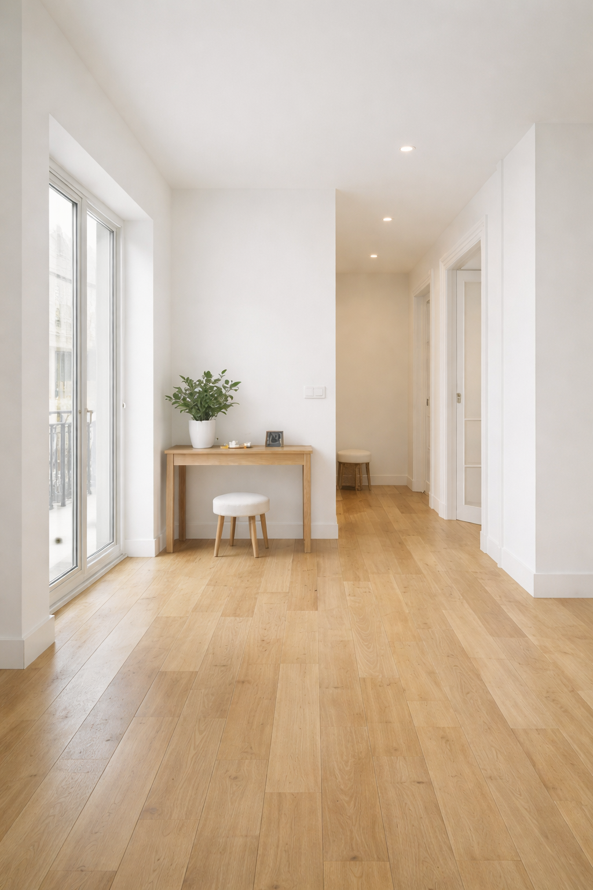

O seu prédio tem uma casa da porteira parada há anos, vazia/sem uso?
É um assunto antigo que ninguém quer resolver.
- Processo burocrático, complexo e caro
- Falta de dinheiro no condomínio
- Ninguém se quer responsabilizar
- Anos de reuniões sem solução
Tratamos de todo o processo de legalização, sem chatices para o condomínio.
A nossa equipa trata do processo de legalização para que o seu prédio ganhe um novo fogo, pronto a rentabilizar.
👉 Avaliação gratuita para condomíniosPeça uma avaliação grátis
Preencha o essencial. Recebe resposta em 24h.

A realidade (sem maquilhagem)
Legalizar uma casa da porteira não é simples.
Envolve, muitas vezes:
- processos urbanísticos antigos ou inexistentes
- plantas não oficiais ou contraditórias
- ausência de título autónomo
- alterações ao título constitutivo
- decisões em assembleia de condomínio
- articulação entre Câmara, Conservatória e Finanças
- risco jurídico se o processo for mal conduzido
É por isso que a maioria dos condomínios adiam o tema durante anos.
Pode ler o nosso guia completo sobre como legalizar casa da porteira (passos, bloqueios, custos e quando não é viável).
A diferença
Nós já conhecemos este processo por dentro.
Não somos intermediários.
Não somos generalistas.
Somos uma equipa focada exclusivamente em desbloquear situações como esta.
O que o condomínio ganha
Quando a casa da porteira é legalizada, o condomínio pode:
- financiar obras no prédio
- reduzir ou eliminar quotas extraordinárias
- vender e distribuir o valor pelos condóminos
- gerar rendimento através de arrendamento
- valorizar todo o edifício
Tudo começa por resolver a parte legal — bem feita.

Como ajudamos
Assumimos o processo do início ao fim:
- análise jurídica e urbanística
- projeto de arquitetura
- licenciamento e legalização
- alterações legais e registais
- apoio ao condomínio e administrador
- esclarecimentos em assembleia
O condomínio não tem de navegar a burocracia.

Modelos possíveis
Legalização para o condomínio
Preço fixo. Processo completo. Sem surpresas.
Venda direta
Compramos mesmo que a fração esteja ilegal ou bloqueada.
Opções flexíveis
Temos várias formas de trabalhar com o condomínio. Podemos falar de honorários, da possibilidade de compra posterior, ou de outros arranjos — o objetivo é encontrar uma solução que se adapte aos proprietários e que a assembleia possa aprovar por unanimidade.
👉 Zero risco. Máxima flexibilidade.
Quer saber se a casa da porteira do seu prédio é viável?
Fazemos uma avaliação inicial gratuita e explicamos os cenários possíveis ao condomínio.
👉 Pedir avaliação gratuitaPerguntas frequentes
O que é exatamente uma "casa da porteira"?
O termo "casa da porteira" é usado para descrever espaços habitacionais que surgiram como rés do chão, anexos ou águas furtadas em edifícios antigos, muitas vezes ocupados ou adaptados ao longo dos anos.
O problema é que, em muitos casos, a utilização real do espaço nunca foi totalmente refletida na documentação oficial, o que cria bloqueios legais e administrativos.
Porque é que tantas casas da porteira ficam bloqueadas?
Porque estes imóveis acumulam frequentemente vários problemas ao mesmo tempo, como:
- Registos prediais que não correspondem à realidade
- Falta de licença de utilização
- Frações nunca formalmente constituídas
- Dependência de aprovação do condomínio
- Alterações feitas sem enquadramento legal
- Situações de herança ou partilha incompletas
Mesmo um único destes pontos pode impedir a venda, financiamento ou valorização do imóvel.
Se o imóvel está habitado há anos, isso não resolve o problema?
Não. O facto de um imóvel estar habitado não regulariza automaticamente a sua situação legal.
Bancos, notários e conservatórias baseiam-se exclusivamente na documentação, não no uso histórico do espaço. É por isso que muitos proprietários só descobrem o problema quando tentam vender.
Porque é que não posso simplesmente vender "como está"?
Na maioria dos casos:
- O comprador não consegue financiamento bancário
- O notário recusa a escritura
- O valor de mercado cai drasticamente
- O processo arrasta-se ou acaba por falhar
Vender "como está" raramente é simples e quase nunca maximiza valor.
A legalização é sempre possível?
Não. E prometer o contrário é irresponsável.
Cada caso depende de:
- Enquadramento urbanístico
- Regulamentos municipais
- Situação do prédio
- Histórico de alterações
- Relação com o condomínio
- Custos vs. valor final
O nosso trabalho começa precisamente por avaliar se a legalização faz ou não sentido.
Quanto tempo demora um processo de legalização?
Depende do caso, mas é importante ser realista:
- Alguns processos resolvem-se em meses
- Outros podem demorar mais de um ano
- Alguns não justificam avançar
O erro mais comum é subestimar tempo, custos e riscos. É por isso que fazemos uma avaliação clara logo no início.
O que acontece na avaliação gratuita?
Na avaliação:
- Analisamos os dados essenciais
- Identificamos bloqueios reais (não suposições)
- Explicamos os caminhos possíveis
- Indicamos riscos, custos aproximados e prazos
- Dizemos se faz sentido legalizar, vender ou optar por outra solução
Sem compromisso e sem pressão.
E se eu não tiver documentos organizados?
É comum — e não é um problema.
Muitos casos chegam até nós com:
- Documentação incompleta
- Informações contraditórias
- Dúvidas sobre o que existe ou não
Faz parte do processo organizar, confirmar e esclarecer.
Trabalham com heranças e partilhas?
Sim. Aliás, muitos imóveis bloqueados estão associados a:
- Heranças indivisas
- Falta de acordo entre herdeiros
- Documentação antiga ou inexistente
Nestes casos, avaliamos primeiro se existe viabilidade prática, antes de avançar.
Porque não tratar disto diretamente com a câmara ou conservatória?
Porque, sem enquadramento técnico e legal:
- O processo pode ser recusado
- Pode avançar pelo caminho errado
- Pode gerar custos desnecessários
- Pode criar novos bloqueios
Um erro no início pode custar meses ou anos.